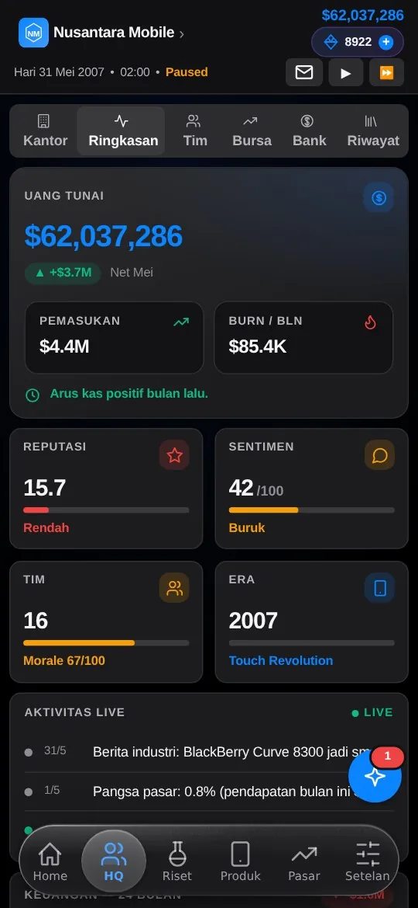

Game · business simulation
Smartphone Empire: Game
Run a phone company from January 1, 2000. Face Nokia, Apple, Samsung and dozens of rivals through to a 2027–2030 scenario.
JavaScriptSupabaseAndroidReal-time simulation

2000Year the game starts
30+Rival companies
10xMaximum speed
3Difficulty levels
Problem
No game really tells how phones evolved from monochrome screens to foldables and AI while letting players rewrite that history.
Solution
You are the CEO: hire a team, research technology, design and manufacture phones, then read the reviews. One game day lasts 60 seconds, and historical events such as the arrival of the iPhone reshape the market.
Key features
- Research, your own or a licensed OS, component plants
- Finance: salaries, taxes, loans, stocks
- You lose if cash stays negative two months in a row
- Player profile, leaderboard, Silicon balance
- Available in the browser and on Android